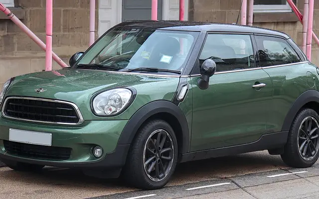

Par Motor › Precios por modelo › Mini Paceman
Precio de segunda mano · noviembre de 2026¿Cuánto vale un Mini Paceman de segunda mano?

Precio justo estimado de un Mini Paceman usado en España, año por año, con los kilómetros normales para su edad y en buen estado: de 9.600 € a 13.200 €. Para tasar el tuyo con sus kilómetros reales y su estado, usa el tasador gratis.
Precios del Mini Paceman por año
Paceman (2013–2016)
Precio de nuevo: Cooper 122 CV, 25.000 € · Cooper D 112 CV, 27.000 € · Cooper S 184 CV, 30.000 €
| Año | Km normales | Cooper 122 CV · Gasolina | Cooper D 112 CV · Diésel | Cooper S 184 CV · Gasolina |
|---|---|---|---|---|
| 2016 | 100.000 km | 11.000 € | 12.700 € | 13.200 € |
| 2015 | 100.000 km | 10.600 € | 11.700 € | 12.800 € |
| 2014 | 100.000 km | 10.200 € | 10.800 € | 12.300 € |
| 2013 | 100.000 km | 9.600 € | 10.000 € | 11.500 € |
La cadena de distribución está en la parte trasera del motor y se desgasta o se rompe; para cambiarla hay que sacar el motor, así que la factura es alta. Un silbido o ruido de cadena con el motor en marcha es la señal. Pregunta si se cambió la cadena.
Kilómetros normales: 15.000 al año en gasolina, híbridos y eléctricos, y 20.000 en diésel, con un máximo de 100.000 km (por encima no tasamos: el precio depende demasiado del historial de cada coche). Cifras redondeadas a 100 €.
Preguntas frecuentes
¿Cuánto vale un Mini Paceman de segunda mano?
Según el año, la versión y los kilómetros, un Mini Paceman usado vale hoy de 9.600 € a 13.200 € en España. El más barato de nuestra tabla es un Cooper de 2013 (9.600 €) y el más caro un Cooper S de 2016 (13.200 €). Son precios justos estimados entre particulares y profesionales, con los kilómetros normales para su edad y en buen estado.
¿Qué motorizaciones tiene el Mini Paceman?
En nuestra base de datos hay versiones gasolina y diésel, en 1 generación: Paceman.
¿Qué motores del Mini Paceman dan problemas?
Ojo con el BMW 2.0 diésel N47 (cadena de distribución) (Cooper D, Cooper SD, 2013–2014): son motores con fallos graves y muy extendidos. Antes de comprar uno, pide el historial de mantenimiento y comprueba si ya se hizo la reparación. El resto de motores no tiene problemas fuera de lo normal.
¿Cómo sé si me piden demasiado por un Mini Paceman?
Abre el tasador de Par Motor, elige el Mini Paceman, el año y los kilómetros reales, y escribe lo que te piden. Te diremos si está por debajo del precio justo (chollo) o por encima (caro). Es gratis y no pide registro ni matrícula.
Otros Mini
Compara su coste real
El precio de compra es solo una parte. Mira cuánto te costaría al mes con combustible, seguro, neumáticos, mantenimiento y lo que pierde de valor.
Abrir el comparador →